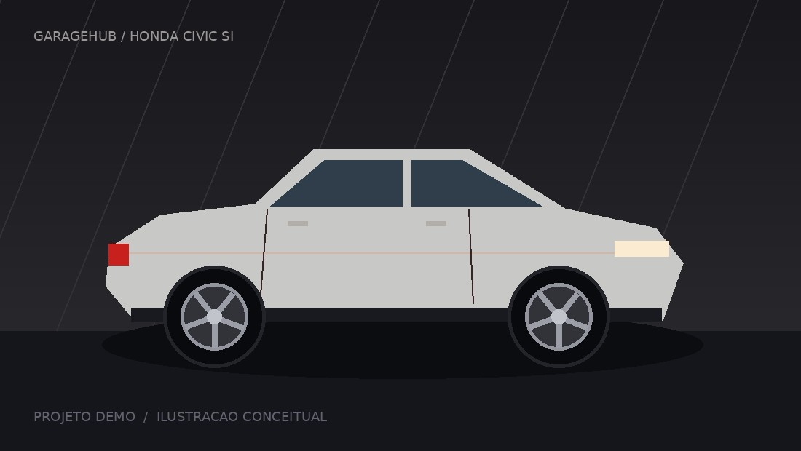
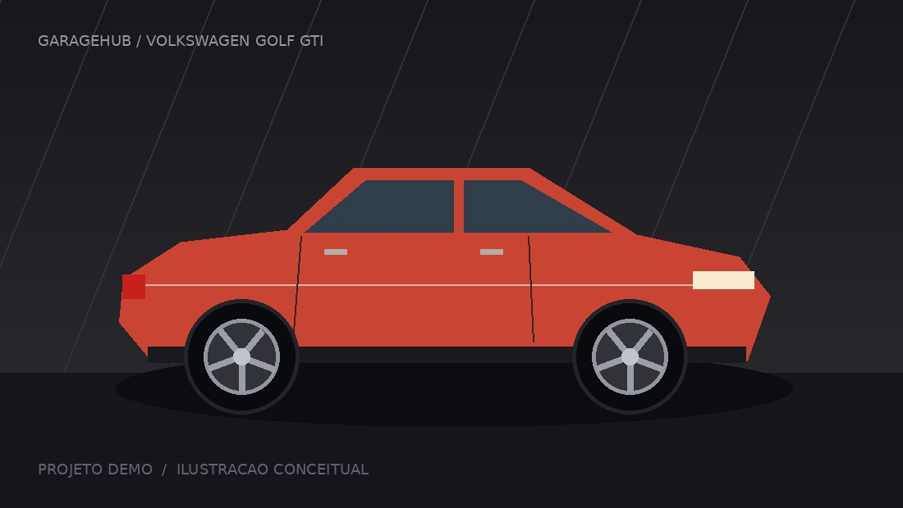
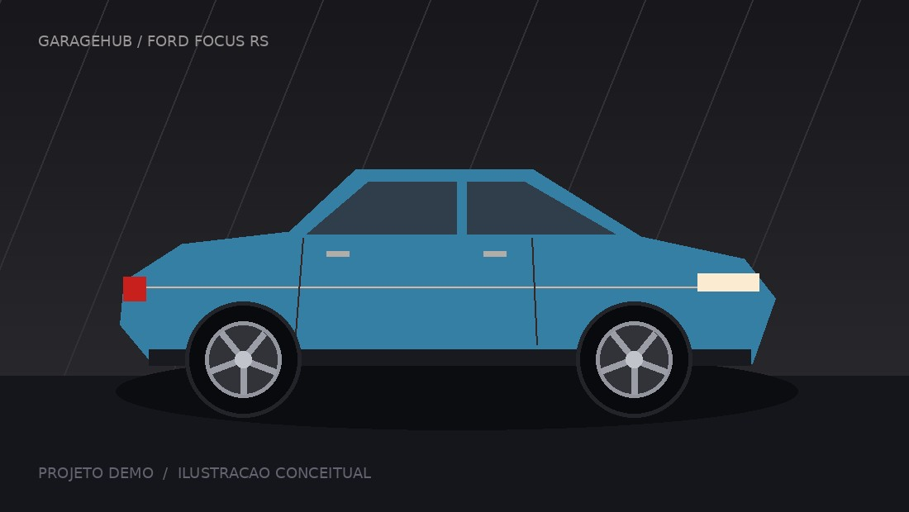

Manhã de revisão no MX-5: óleo, alinhamento e um bom café. O próximo projeto é o GT86.

O que está acontecendo nas garagens que você acompanha.

Manhã de revisão no MX-5: óleo, alinhamento e um bom café. O próximo projeto é o GT86.

Fim de semana dedicado ao GTI. Filtro novo, revisão em dia e mais um capítulo desse projeto. Quem mais passou o sábado na garagem? 🔧

350 cv de fábrica e uma lista de ideias que só cresce. Cheguei à GarageHub para trocar experiências e acompanhar as garagens de vocês!

O Civic ganhou atenção nos detalhes hoje. Nem toda evolução aparece no dinamômetro — às vezes está no cuidado. Qual é o próximo passo do seu projeto?
O Jetta ficou pronto para a estrada. Pneus revisados e uma rota de serra no roteiro.
O Fiesta ST ganhou pneus novos. A diferença nas curvas vale mais que qualquer número.
Gostei das escolhas. Qual foi a última medição?
Belo resultado! Vamos marcar um encontro de garagens.